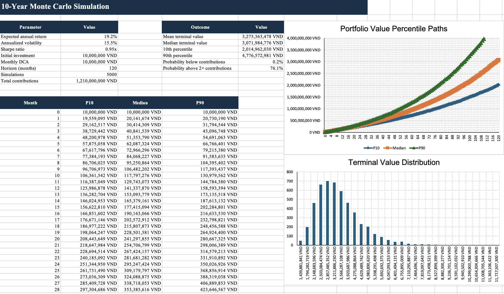
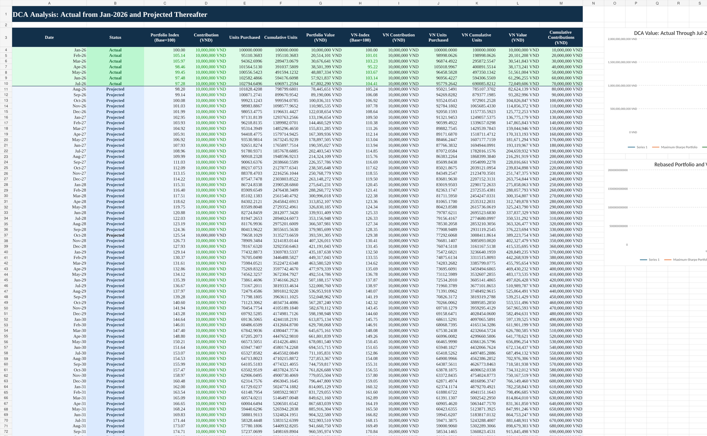
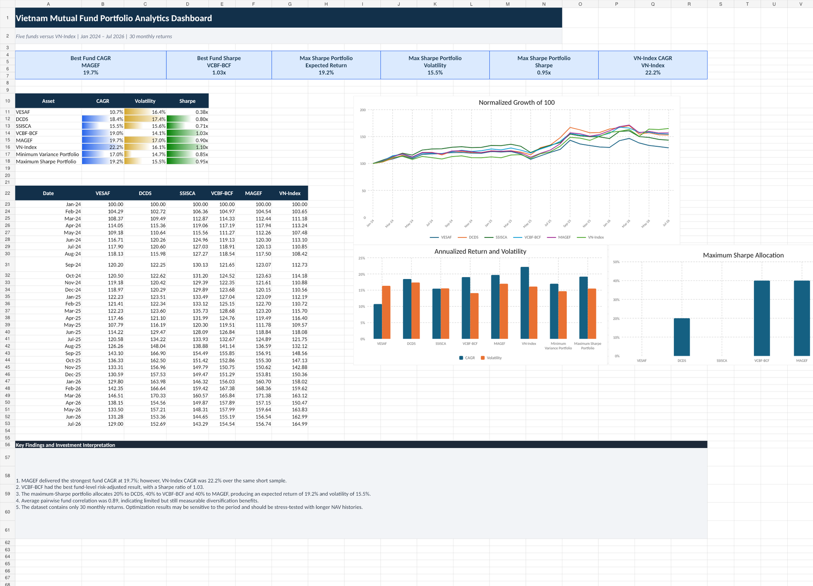

Portfolio Management · Quant Analytics · DCA
A personal portfolio-analytics project comparing five Vietnamese mutual funds with the VN-Index and extending the analysis into optimization, simulation, and DCA.
The problem & context
The project was designed to move beyond selecting funds based only on historical return. It compares return, volatility, risk-adjusted performance, benchmark behavior, correlations, portfolio construction, efficient-frontier trade-offs, Monte Carlo outcomes, and a DCA plan beginning in January 2026.
My role
I created the workbook as an end-to-end personal investment analytics project. I assembled NAV and benchmark data, calculated monthly returns and performance metrics, built optimization and simulation views, and connected the analysis to an actual / projected DCA schedule.
Methodology
Calculate CAGR, volatility, Sharpe ratio, best / worst months, and benchmark-relative results for each fund.
Use correlation, minimum-variance, and maximum-Sharpe analysis to understand diversification trade-offs.
Build an actual-from-Jan-2026 / projected-thereafter DCA schedule and compare portfolio value with a VN-Index contribution path.
Model evidence


Key findings
The dashboard reports MAGEF at approximately 19.7% CAGR, while VCBF-BCF had the strongest fund Sharpe ratio at about 1.03x.

The DCA sheet separates actual and projected periods and tracks contribution amount, units purchased, cumulative units, portfolio value, and a comparable VN-Index path.
AI-assisted workflow
AI was used to help structure the project roadmap, pressure-test metric choices, troubleshoot analytical logic, and improve the explanation of portfolio and DCA results. Performance calculations and workbook outputs remain data- and formula-driven.
Example prompts used for structured thinking:
Which metrics best distinguish return from risk-adjusted performance when comparing mutual funds with a benchmark?How should I explain a DCA model that contains actual contributions from January 2026 and projected contributions thereafter?AI was used as a support and quality-control tool; calculations and final conclusions were checked against the underlying model.
Outcome / achievement
Created a multi-tab portfolio analytics workbook covering performance, benchmark comparison, correlation, efficient frontier, Monte Carlo analysis, DCA, dashboarding, and methodology — turning a personal investing plan into a portfolio-ready analytical project.
Supporting files
The page is designed so a recruiter can understand the project without downloading anything. The original Excel workbook is still available for deeper review.